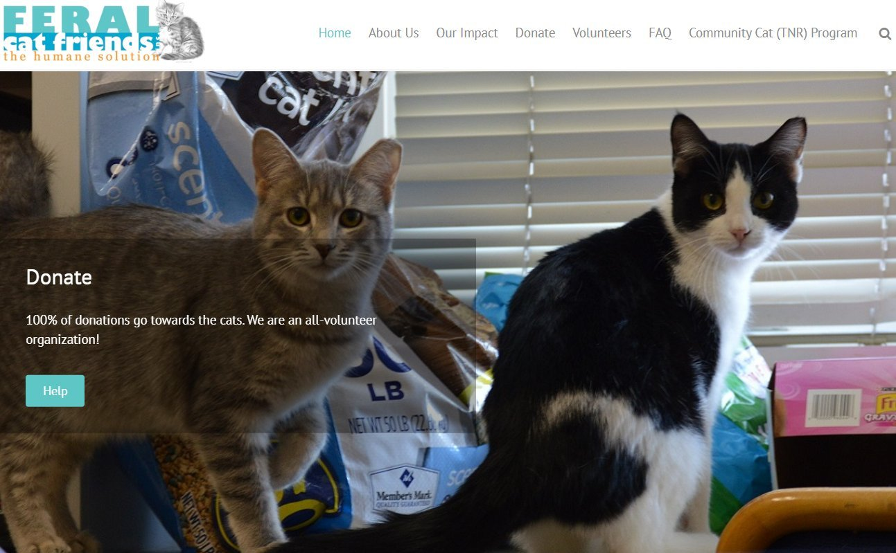

Feral Cat Friends Website Redesign
Collaborated with Feral Cat Friends, a Bloomington-based nonprofit dedicated to reducing cat euthanasia through adoption, fostering, volunteer efforts, and community support. Conducted website accessibility evaluations, gathered client feedback, and designed user-focused improvements to enhance navigation, usability, and engagement. Built and maintained WordPress pages while ensuring accessibility standards and responsive design practices were met.